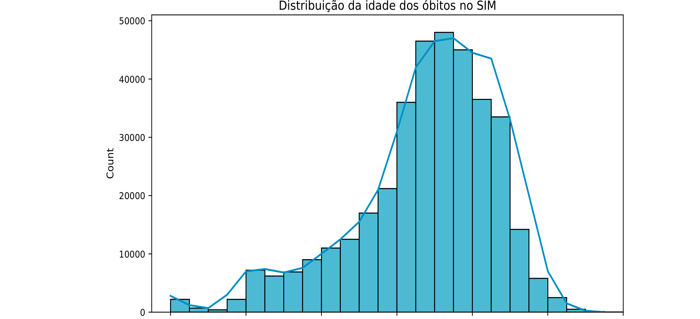
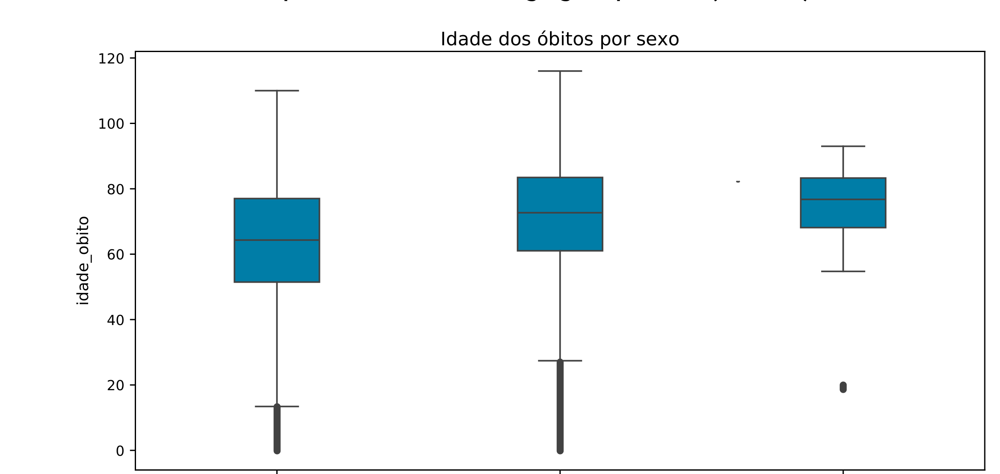

Módulo 2 | Aula 3
EDA e visualização da informação: dando vida aos dados
Seaborn: explorando distribuições
O Seaborn é construído sobre o Matplotlib e oferece gráficos estatísticos prontos, com boa estética por padrão e integração direta com DataFrames do Pandas. É a ferramenta ideal para investigar como uma variável numérica se distribui e como ela se compara entre grupos categóricos.
Histograma: a forma da distribuição
Veja como criar no Seaborn um gráfico similar ao anterior, feito com o Matplotlib. Repare que agora temos um melhor acabamento estético e, em geral, a sintaxe é mais simples e clara.
import seaborn as sns
# Histograma com curva de densidade (KDE) da idade dos óbitos
sns.histplot(data=sim_consolidado, x="idade", bins=20, kde=True)
plt.title("Distribuição da idade dos óbitos no SIM")
plt.show()Histograma de idade de óbito (Seaborn).

Boxplot: comparando grupos
O boxplot resume a distribuição em cinco números, são eles:
- Mínimo.
- Primeiro quartil.
- Mediana.
- Terceiro quartil.
- Máximo.
Ele também destaca pontos fora desse intervalo como possíveis outliers, tornando-se especialmente útil para comparar rapidamente vários municípios ou faixas etárias lado a lado. Veja o exemplo a seguir:
# Boxplot da idade dos óbitos, comparando sexo feminino e masculino
sns.boxplot(data=sim_consolidado, x="sexo", y="idade")
plt.title("Idade dos óbitos por sexo")
plt.show()Boxplot de idade de óbito agregada por sexo (Seaborn).

Um outlier em um boxplot de dados de saúde nem sempre é um erro de digitação, pode ser um óbito real em uma idade incomum. Antes de descartar um valor extremo, volte à base original e investigue o registro. A EDA serve para levantar a suspeita, não para decidir sozinha o que é ruído e o que é sinal.